All About Penguins
General Information
Species
After reading the website, please click here to take the quiz
Click here to read about me.
There are 17 different species of penguins on Earth. Those 17 species are:
- Adelie
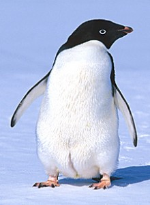
- African
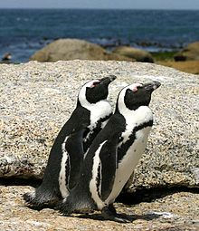
- Chinstrap
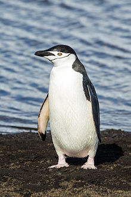
- Emperor (Largest species of penguin)
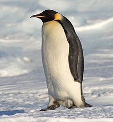
- Erect-crested
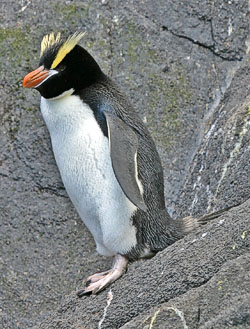
- Fiordland
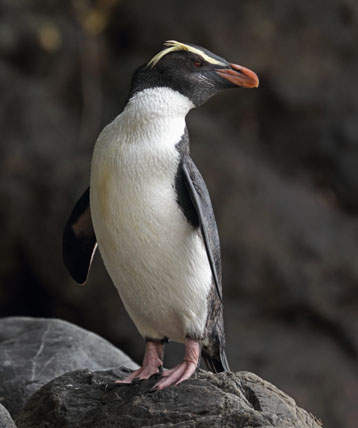
- Galapagos
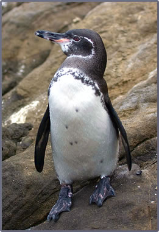
- Gentoo
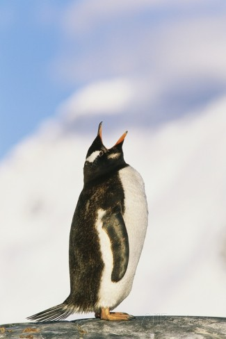
- Humboldt
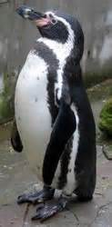
- Little Blue (Smallest species of penguins)
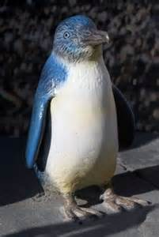
- King
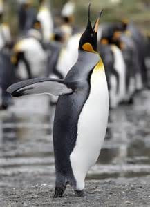
- Yellow eyed
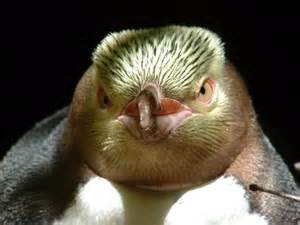
- Snares
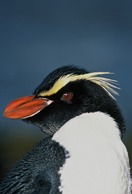
- Royal
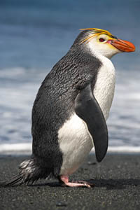
- Rockhopper
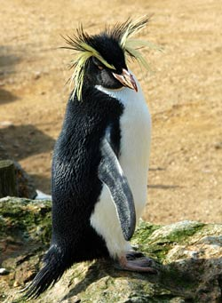
- Macaroni
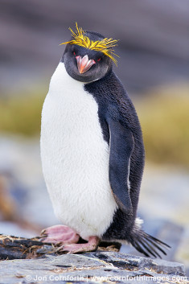
- Magellanic
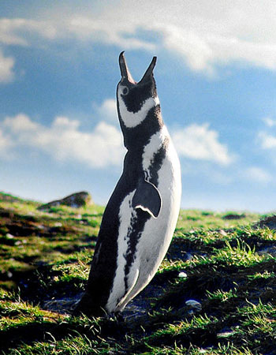
Diet and Eating Habits
Different species of penguins eat different food, but generally speaking, they eat the following:
Other information:
- The species of the Antarctic and the subantarctic primarily feed on krill and squids.
Species farther north tend to eat fish.
- Penguins feed at sea. Most feeding occur at 15.3 to 18.3 meters below the surface.
- Penguins rely on their visions while hunting
- Sometimes, penguins will eat stones. Scientists suspect that the reasons may be to aid digestion, reduce
buoyancy while diving, or to decrease their feelings of hunger.
- Penguins go through annual fasting. Before fasting, they build up a fat layer which provides energy
Preadtors
Penguins are hunted by underwater animals, such as:
- Leopard Seals
- Sea Lions
- Orcas
Penguins are also hunted by birds, such as:
Skua
Australian Sea Eagle
On land, penguins are hunted by:
- Snakes
- Lizards
- Foxes
- Rats
Habitat
Different species live in different areas. But they all need to live close to water for food. Therefore they are found in costal regions of:
- South America
- Africa
- Australia
- New Zealand
Fun facts: Sometimes people will say that penguins are in the North Pole, but in reality, they are in the South Pole